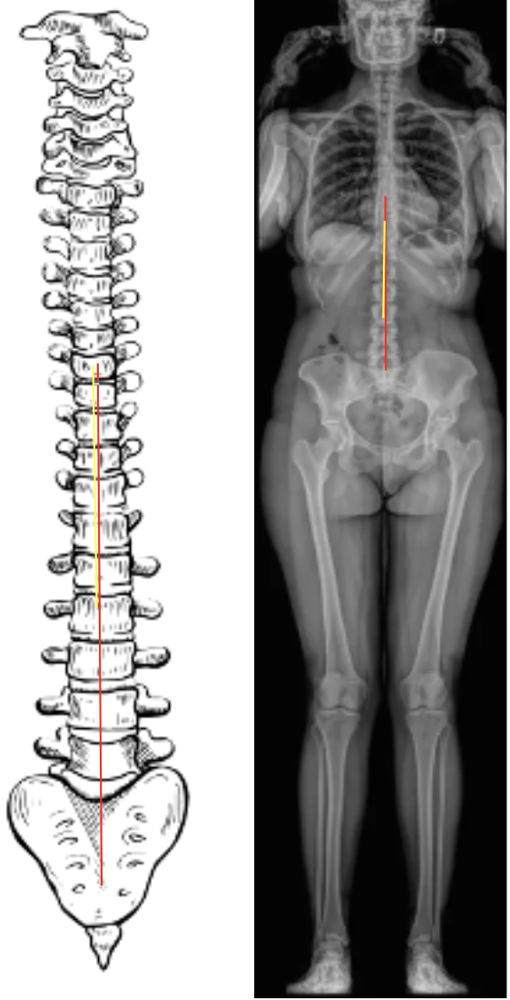

1) Description of Measurement
The Apical Vertebral Translation (AVT) quantifies the lateral displacement of the apical vertebra from the central vertical axis of the body in the coronal plane.
It provides an objective measure of the severity of scoliotic curvature and the degree of spinal asymmetry.
The apical vertebra is defined as the most laterally deviated and rotated vertebra at the midpoint of a spinal curve.
AVT helps assess curve flexibility, progression, and surgical correction and is routinely reported alongside the Cobb angle and coronal balance in scoliosis evaluation.
2) Instructions to Measure
3) Normal vs. Pathologic Ranges
Key Points:
4) Important References
Cobb JR. Outline for the study of scoliosis. In: Instructional Course Lectures. Vol 5. American Academy of Orthopaedic Surgeons; 1948:261–275.
Lenke LG, Betz RR, Harms J, et al. Adolescent idiopathic scoliosis: a new classification to determine extent of spinal arthrodesis. J Bone Joint Surg Am. 2001;83(8):1169–1181.
Ma Q, Wang L, Zhao L, et al. Coronal Balance vs. Sagittal Profile in Adolescent Idiopathic Scoliosis, Are They Correlated? Front Pediatr. 2020 Jan 10;7:523. doi: 10.3389/fped.2019.00523.
Kaya O, Kara D, Gok H, et al. The Importance of Lumbar Curve Flexibility and Apical Vertebral Rotation for the Prediction of Spontaneous Lumbar Curve Correction in Selective Thoracic Fusion for Lenke Type 1 and 2 C Curves: Retrospective Cohort Study with a Mean Follow-Up of More than 10 years. Global Spine J. 2022 Sep;12(7):1516-1523. doi: 10.1177/21925682221098667.
Hamzaoglu A, Talu U, Tezer M, et al. Assessment of curve flexibility in adolescent idiopathic scoliosis. Spine (Phila Pa 1976). 2005 Jul 15;30(14):1637-42. doi: 10.1097/01.brs.0000170580.92177.d2.
5) Other info....
AVT provides a linear measure of coronal deformity, complementing angular measurements such as the Cobb angle.
It is especially useful in evaluating curve flexibility during bending radiographs and postoperative correction following instrumentation.
Positive AVT values indicate rightward translation; negative AVT indicates leftward deviation.
Multiple curve patterns (double major or triple curve scoliosis) may have distinct AVTs for each segment.
EOS imaging or stitched long-cassette digital radiographs are preferred for accurate measurement and reduced distortion.
AVT should always be interpreted in conjunction with coronal balance, pelvic tilt, and shoulder alignment to assess global posture.
In surgical planning, AVT helps guide fusion level selection and implant placement strategy to restore symmetry and balance.